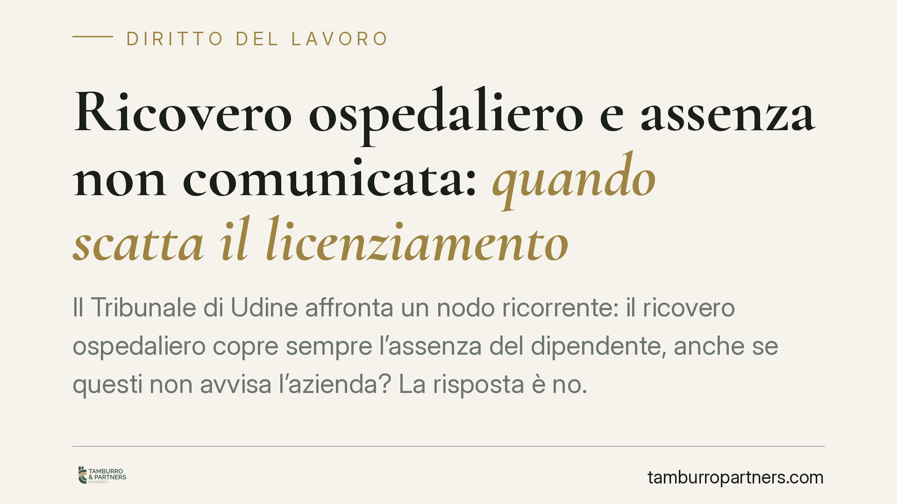

Ricovero ospedaliero e assenza non comunicata: quando scatta il licenziamento
Il Tribunale di Udine affronta un nodo ricorrente: il ricovero ospedaliero copre sempre l'assenza del dipendente, anche se questi non avvisa l'azienda? La risposta è no. L'impedimento a lavorare e l'obbligo di comunicare l'assenza restano due piani distinti. Chi era in grado di informare il datore e non lo fa espone sé stesso al rischio di un licenziamento disciplinare legittimo.

Il caso
Un lavoratore si assenta per un ricovero ospedaliero ma non ne dà comunicazione all'azienda. Il datore di lavoro contesta l'assenza ingiustificata e avvia il procedimento disciplinare. Il dipendente si difende invocando l'impedimento sanitario: era ricoverato, quindi — a suo dire — l'assenza era di per sé giustificata.
Il Tribunale di Udine respinge questa impostazione. Il ricovero spiega *perché* il lavoratore non si è presentato, ma non lo esonera dall'obbligo di *avvisare* il datore quando era concretamente in grado di farlo. Due obblighi diversi, con conseguenze diverse.
Inquadramento normativo
Il rapporto di lavoro si regge su un dovere generale di correttezza e buona fede (artt. 1175 e 1375 del Codice civile). Da qui discende l'obbligo del dipendente di comunicare tempestivamente l'assenza e la sua causa: è un dovere accessorio ma autonomo rispetto alla prestazione lavorativa.
La normativa in materia di malattia impone al lavoratore di comunicare lo stato di malattia e, tramite il medico, di far trasmettere il certificato telematico all'INPS. La disciplina sui controlli e sulle comunicazioni è regolata dall'art. 2110 c.c. e dalla contrattazione collettiva, che di norma fissa termini precisi per l'avviso all'azienda (spesso entro l'inizio del turno o entro poche ore).
La giurisprudenza distingue da tempo tra impedimento alla prestazione e impedimento alla comunicazione. Il primo giustifica il fatto di non lavorare; il secondo — se effettivamente esistente — giustifica anche il fatto di non aver avvisato. Ma se il lavoratore, pur ricoverato, aveva la possibilità materiale di contattare il datore (direttamente o tramite un familiare), il mancato avviso resta una condotta imputabile.
Implicazioni pratiche
Il punto decisivo è la comunicabilità. Un ricovero in terapia intensiva, in stato di incoscienza o in condizioni che impediscono qualsiasi contatto rende oggettivamente impossibile avvisare: in quel caso l'assenza non comunicata non è sanzionabile.
Diversa è la situazione del lavoratore ricoverato ma vigile, con telefono a disposizione o con familiari informati, che semplicemente non attiva alcuna comunicazione. Qui il silenzio diventa inadempimento e può integrare l'assenza ingiustificata, con possibile rilievo disciplinare fino al licenziamento, secondo quanto previsto dal contratto collettivo applicabile.
Per il datore di lavoro resta fermo l'onere di valutare la proporzionalità della sanzione: occorre verificare le circostanze concrete, la durata del silenzio, la reale impossibilità di comunicare e gli eventuali precedenti. Un licenziamento adottato senza questa istruttoria rischia di essere annullato per sproporzione.
Per il dipendente, la lezione è netta: la certificazione sanitaria prova la malattia, non sostituisce l'avviso all'azienda. Dare per scontato che "il certificato arriva all'INPS, quindi l'azienda è informata" è un errore frequente e pericoloso.
Cosa fare in concreto
- Comunica subito l'assenza, anche prima del certificato: una telefonata, un messaggio o l'avviso tramite un familiare bastano a soddisfare l'obbligo quando sei nelle condizioni di farlo.
- Rispetta i termini del contratto collettivo: verifica entro quante ore e con quali modalità va dato l'avviso di assenza; non confondere l'invio del certificato con la comunicazione all'azienda.
- Documenta l'impossibilità di comunicare, se esiste: cartella clinica, verbale di pronto soccorso o attestazioni che provino lo stato di incoscienza o l'assenza di ogni mezzo di contatto.
- Datori di lavoro: prima di contestare, accertate le condizioni effettive del ricovero e valutate la proporzionalità della sanzione rispetto alla gravità del silenzio.
- In caso di contestazione già avviata, raccogliete per tempo prove e testimonianze: la differenza tra assenza giustificata e inadempimento si gioca sui fatti concreti.
La pronuncia di Udine conferma un principio di equilibrio: il diritto alla tutela della salute non cancella i doveri di lealtà verso il datore. Chi può avvisare, deve farlo.
---
*Contributo informativo a cura di Tamburro & Partners - Avv. Giuseppe Tamburro. Non costituisce parere legale.*
Ogni storia di lavoro ha i suoi tempi.
Se gestisci HR e vuoi un confronto su contenzioso, ispezioni o licenziamenti, scrivi allo studio. Ti rispondiamo entro un giorno lavorativo.